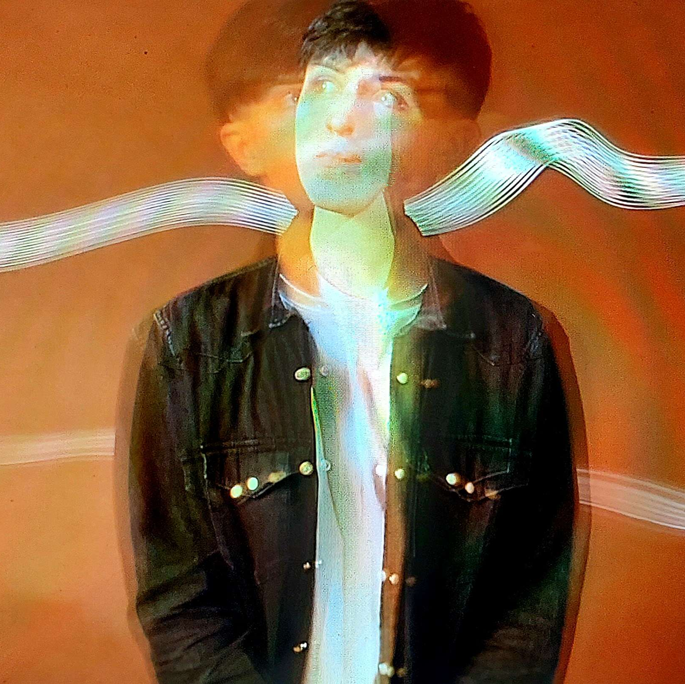

About Me

My name is Aaron, nice to meet you!
I'm a photographer and photography student from Ireland. I grew up in Carraroe, a Gaeltacht village on the west coast of Galway. I'm currently enrolled in the BA(Hons)Photography + Visual Media undergraduate course at IADT(Institute of Art, Design & Technology). I am most passionate about concert and street photography, and as such, I like to focus my work in these genres. Although in saying this, I've also gained a new found love for studio portraiture, and I look forward to developing my expertise in a broader set of photograhic genres. I appreciate you taking the time to view my portfolio. Please feel free to get in touch via my contact form, I'd be more than happy to chat!